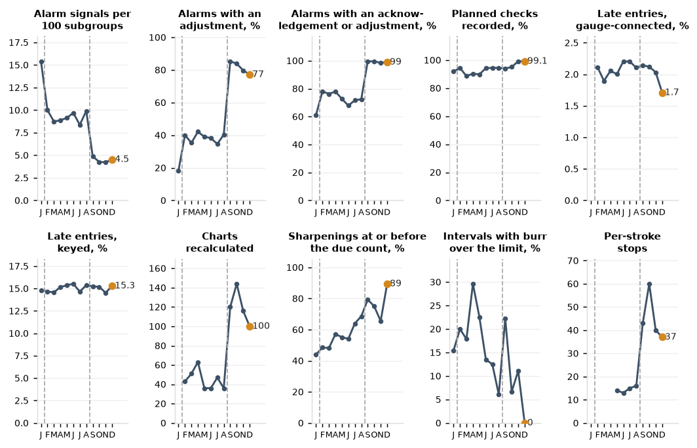
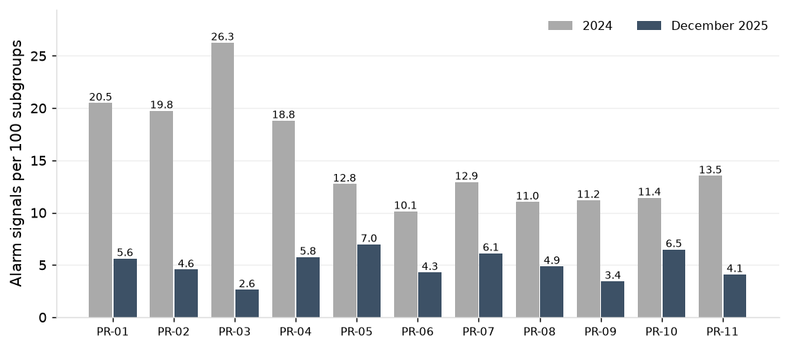
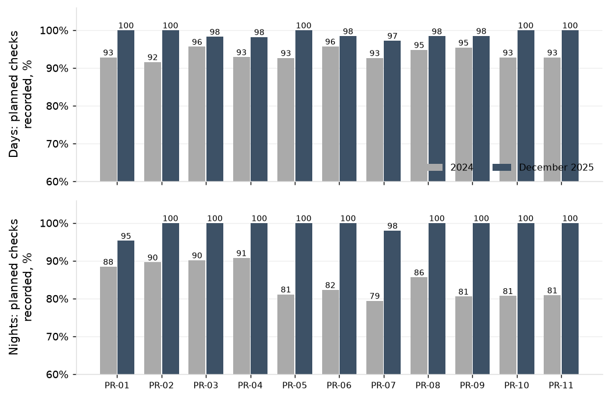
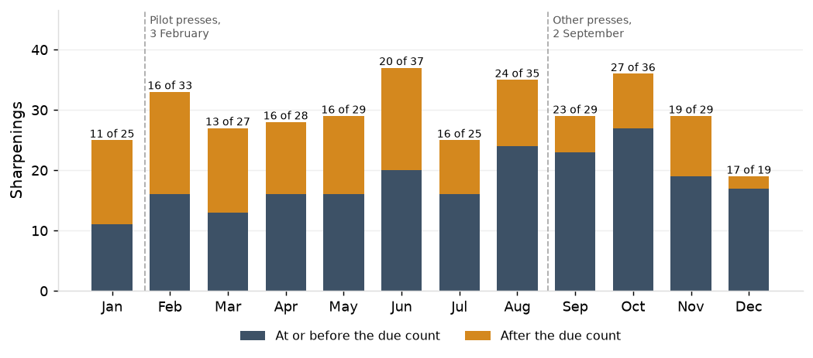

1. Summary
In December the SPC program ran at the level set by the redesign on all eleven presses. Alarm signals were 4.5 per 100 subgroups against 15.2 in 2024, with an acknowledgement or adjustment on 99%. 99.1% of planned checks were recorded, against 89.6%.
Die wear held at the sharpening count. 17 of 19 December sharpenings came at or before the die's due count, against 145 of 305 in 2024. No sharpening interval ended with burr over the limit, and there were no burr nonconformances or sorting events.
Four items remain open at month end. 39 of 149 critical characteristics have production Ppk under 1.33 over 2025. Five dies are past their due count. Twelve gauges are past calibration due. Keyed entries made more than 20 minutes after the parts remain at 15.3%.
SPC measures, December 2025
| Section | Measure | Dec 2025 | Nov 2025 | 2025 | 2024 |
|---|
| 2 | Ppk, critical formed characteristics, median | | | 1.37 (89 characteristics) | 1.01 (91) |
| 2 | Ppk, critical punched characteristics, median | | | 1.60 (60) | 1.57 (58) |
| 2 | Critical characteristics with Ppk under 1.33 | | | 39 of 149 | 87 of 149 |
| 3 | Alarm signals per 100 subgroups | 4.5 | 4.2 | 8.0 | 15.2 |
| 3 | Alarm signals with an adjustment recorded | 77.2% | 79.8% | 44.2% | 18.8% |
| 3 | Alarm signals with an acknowledgement or adjustment | 99.0% | 98.5% | 77.0% | 63.4% |
| 3 | Alarm signals with nothing recorded | 6 | 8 | 3,095 | 7,977 |
| 4 | Planned checks recorded | 99.1% | 99.2% | 93.5% | 89.6% |
| 4 | First check of each shift recorded | 97.3% | 97.1% | 86.9% | 79.8% |
| 4 | Entries more than 20 minutes after the parts, gauge-connected | 1.7% | 2.0% | 2.0% | |
| 4 | Entries more than 20 minutes after the parts, keyed | 15.3% | 14.5% | 15.0% | 15.0% |
| 5 | Charts recalculated | 100 | 116 | 792 recalculations, February to December | none (fixed limits from 3 February 2025) |
| 5 | Charts due for recalculation at 31 December | 0 | | | |
| 6 | Sharpenings at or before the due count | 89% (17 of 19) | 66% (19 of 29) | 62% (218 of 352) | 48% (145 of 305) |
| 6 | Sharpening intervals with burr over the limit | 0 of 20 | 3 of 27 | 52 of 345 | 48 of 308 |
| 6 | Per-stroke stops | 37 | 40 | 238 | none (monitoring from 5 May 2025) |
| 6 | Per-stroke stops with nothing found | 2 | 7 | 39 | |
| 6 | Punch replacements | 18 | 11 | 224 | 200 |
Headline measures by month, 2025

Each panel is one measure on all presses by month, January to December 2025, with December marked and labelled. The dashed lines are the dates the redesign took effect: 3 February on the pilot presses and 2 September on the other eight.
2. Capability on critical characteristics
Production capability on critical formed characteristics rose to a median Ppk of 1.37 over 2025, against 1.01 in 2024, and critical characteristics under 1.33 fell from 87 to 39 of 149. Of the 39, 36 are formed heights or bend angles, and 31 of those are on PR-03, PR-06 and PR-09. Cpk is higher than Ppk on all 39, with a median of 1.60 against 1.23, so the shortfall is variation between subgroups, not within them.
Critical characteristics with production Ppk under 1.33, 2025
| Part | Characteristic | Name | Press | Chart | Ppk | Cpk | Subgroups |
|---|
| P-17726 | C-17726-04 | formed height D | PR-02 | three-way chart | 0.88 | 1.50 | 105 |
| P-11348 | C-11348-06 | formed height F | PR-01 | three-way chart | 0.89 | 1.23 | 118 |
| P-37321 | C-37321-05 | formed height E | PR-09 | three-way chart | 0.97 | 1.43 | 210 |
| P-31056 | C-31056-04 | formed height D | PR-09 | three-way chart | 1.07 | 1.36 | 239 |
| P-31056 | C-31056-05 | formed height E | PR-09 | three-way chart | 1.08 | 1.34 | 242 |
| P-22617 | C-22617-05 | formed height E | PR-06 | three-way chart | 1.08 | 1.36 | 440 |
| P-13459 | C-13459-04 | hole diameter D | PR-02 | tool-wear chart | 1.11 | 1.84 | 135 |
| P-35884 | C-35884-08 | bend angle H | PR-09 | three-way chart | 1.12 | 1.60 | 640 |
| P-29717 | C-29717-07 | bend angle G | PR-05 | three-way chart | 1.13 | 1.71 | 91 |
| P-39057 | C-39057-04 | formed height D | PR-09 | three-way chart | 1.14 | 1.68 | 309 |
| P-35884 | C-35884-07 | formed height G | PR-09 | three-way chart | 1.15 | 1.66 | 642 |
| P-26076 | C-26076-05 | formed height E | PR-06 | three-way chart | 1.16 | 1.37 | 155 |
| P-35884 | C-35884-05 | formed height E | PR-09 | three-way chart | 1.18 | 1.62 | 641 |
| P-12485 | C-12485-06 | formed height F | PR-01 | three-way chart | 1.18 | 1.85 | 456 |
| P-22558 | C-22558-05 | formed height E | PR-06 | three-way chart | 1.19 | 1.40 | 245 |
| P-22558 | C-22558-06 | bend angle F | PR-06 | three-way chart | 1.19 | 1.52 | 245 |
| P-27778 | C-27778-07 | formed height G | PR-06 | three-way chart | 1.20 | 1.42 | 291 |
| P-37007 | C-37007-06 | formed height F | PR-11 | three-way chart | 1.22 | 1.81 | 239 |
| P-15731 | C-15731-06 | formed height F | PR-03 | three-way chart | 1.23 | 1.43 | 875 |
| P-29540 | C-29540-05 | formed height E | PR-06 | three-way chart | 1.23 | 1.76 | 1124 |
| P-14026 | C-14026-08 | bend angle H | PR-03 | three-way chart | 1.23 | 1.67 | 667 |
| P-11333 | C-11333-04 | formed height D | PR-03 | three-way chart | 1.26 | 1.48 | 1581 |
| P-31102 | C-31102-02 | hole to edge B | PR-09 | X-bar and R | 1.26 | 1.33 | 430 |
| P-11333 | C-11333-05 | formed height E | PR-03 | three-way chart | 1.26 | 1.53 | 1583 |
| P-15731 | C-15731-05 | formed height E | PR-03 | three-way chart | 1.26 | 1.48 | 874 |
| P-29540 | C-29540-06 | formed height F | PR-06 | three-way chart | 1.27 | 1.76 | 1124 |
| P-37321 | C-37321-04 | formed height D | PR-09 | three-way chart | 1.27 | 1.82 | 213 |
| P-39057 | C-39057-05 | formed height E | PR-09 | three-way chart | 1.27 | 1.73 | 313 |
| P-10823 | C-10823-06 | bend angle F | PR-03 | three-way chart | 1.28 | 1.65 | 404 |
| P-31102 | C-31102-06 | bend angle F | PR-09 | three-way chart | 1.28 | 1.54 | 425 |
| P-20696 | C-20696-05 | formed height E | PR-06 | three-way chart | 1.29 | 1.53 | 227 |
| P-32929 | C-32929-01 | hole diameter A | PR-08 | tool-wear chart | 1.29 | 1.81 | 131 |
| P-39057 | C-39057-06 | bend angle F | PR-09 | three-way chart | 1.30 | 1.80 | 312 |
| P-28553 | C-28553-04 | formed height D | PR-06 | three-way chart | 1.30 | 1.56 | 597 |
| P-15731 | C-15731-07 | formed height G | PR-03 | three-way chart | 1.31 | 1.56 | 875 |
| P-39736 | C-39736-04 | formed height D | PR-09 | three-way chart | 1.31 | 1.69 | 312 |
| P-37771 | C-37771-05 | formed height E | PR-09 | three-way chart | 1.31 | 1.68 | 899 |
| P-13708 | C-13708-05 | formed height E | PR-03 | three-way chart | 1.32 | 1.66 | 435 |
| P-22617 | C-22617-04 | formed height D | PR-06 | three-way chart | 1.33 | 1.69 | 439 |
3. Alarms and reaction
Alarm signals held at 4.5 per 100 subgroups in December, and all but 6 of 600 carry an acknowledgement or adjustment. Rates run from 2.6 per 100 on PR-03 to 7.0 on PR-05, and an adjustment is recorded on 77% of alarms. The six alarms with nothing recorded are rule 1 alarms on routine subgroups across five presses, four of them on critical characteristics. Rules 2 to 4 showed a pattern on 2,519 of 13,245 subgroups, 1,672 of them on rule 4.
Alarm signals per 100 subgroups by press, December 2025 against 2024

December alarms with nothing recorded
| Press | Part | Characteristic | Name | Time | Subgroup | Operator | Rule | Critical |
|---|
| PR-01 | P-18000 | C-18000-04 | hole to hole D | 2025-12-01 19:01 | routine | E-1024 | rule 1 | yes |
| PR-01 | P-18000 | C-18000-04 | hole to hole D | 2025-12-18 13:57 | routine | E-1001 | rule 1 | yes |
| PR-02 | P-12485 | C-12485-05 | hole to hole E | 2025-12-17 19:30 | routine | E-1014 | rule 1 | yes |
| PR-03 | P-10823 | C-10823-03 | hole to hole C | 2025-12-30 16:32 | routine | E-1015 | rule 1 | yes |
| PR-07 | P-26000 | C-26000-09 | flatness I | 2025-12-02 08:59 | routine | E-1007 | rule 1 | |
| PR-11 | P-35908 | C-35908-06 | hole to hole F | 2025-12-19 12:00 | routine | E-1011 | rule 1 | |
4. Checks and recording
Planned checks recorded held at 99.1% in December, against 89.6% in 2024, with nights at 99.5% against 84.4%. The first check of the shift was recorded on 95.6% of day shifts and on every night shift, against 77.0% and 84.8% in 2024. Late entry now depends on how the reading reaches the software. In December 1.7% of gauge-connected entries were made more than 20 minutes after the parts, against 15.3% of the 7,009 keyed entries, unchanged from 15.0% in 2024.
Planned checks recorded by press and shift, December 2025 against 2024

5. Limits
No chart was due for recalculation at 31 December. 100 charts were recalculated in December: 96 on a baseline after sharpening and 4 tool-wear charts. 17 charts on the other eight presses received their first limits under the redesign. The 246 charts with limits from before the die's last sharpening are all still collecting their baseline on the new edge.
Charts recalculated in December
| Press | Limits basis | Charts recalculated | Charts with first limits under the redesign | Dies |
|---|
| PR-01 | baseline after sharpening | 8 | 1 | 5 |
| PR-01 | tool-wear regression | 1 | 0 | 1 |
| PR-02 | baseline after sharpening | 9 | 4 | 4 |
| PR-03 | baseline after sharpening | 26 | 0 | 6 |
| PR-03 | tool-wear regression | 1 | 0 | 1 |
| PR-04 | baseline after sharpening | 6 | 2 | 4 |
| PR-04 | tool-wear regression | 1 | 0 | 1 |
| PR-05 | baseline after sharpening | 9 | 5 | 4 |
| PR-06 | baseline after sharpening | 3 | 0 | 1 |
| PR-07 | baseline after sharpening | 6 | 0 | 2 |
| PR-08 | baseline after sharpening | 4 | 3 | 4 |
| PR-09 | baseline after sharpening | 6 | 0 | 2 |
| PR-09 | tool-wear regression | 1 | 0 | 1 |
| PR-10 | baseline after sharpening | 13 | 2 | 5 |
| PR-11 | baseline after sharpening | 6 | 0 | 2 |
| all presses | baseline after sharpening | 96 | 17 | 39 |
| all presses | tool-wear regression | 4 | 0 | 4 |
6. Die wear and per-stroke monitoring
Sharpening at the due count held in December: 17 of 19 sharpenings with a burr line came at or before the die's due count, against 145 of 305 in 2024. The two late sharpenings were D-0090-A on PR-04, 19% past its count, and D-0823-C on PR-03, 6% past. Five dies are past their due count at month end, three of them not run in December. D-8000-A on PR-01 and D-9057-B on PR-09 are running past their count and are the two to pull first. Fourteen more dies come due in January at December's shot rate.
The per-stroke charts stopped presses 37 times in December: 18 for a worn or chipped punch, 17 for slug pulling and 2 with nothing found. All 18 punch replacements in the month followed a stop.
Sharpenings against the due count by month, 2025

Each column is the sharpenings in the month on dies with a burr line, with the count at or before the due count over the total above it. The dashed lines are the dates the redesign took effect.
Dies past their due count, or due in January 2026 at December's shot rate
| Press | Die | Part | Last sharpening | Shots since | Due count | Shots to the due count | Strokes a day in December | Days to the due count |
|---|
| PR-07 | D-7463-B | P-27463 | 2024-03-12 | 330,878 | 257,042 | -73,836 | not run in December | past due |
| PR-11 | D-8681-A | P-38681 | 2025-06-15 | 188,947 | 154,504 | -34,443 | not run in December | past due |
| PR-01 | D-8000-A | P-18000 | 2025-11-07 | 193,003 | 184,266 | -8,737 | 4,600 | past due |
| PR-08 | D-2488-B | P-22488 | 2023-01-14 | 288,601 | 283,578 | -5,023 | not run in December | past due |
| PR-09 | D-9057-B | P-39057 | 2025-06-04 | 202,952 | 198,796 | -4,156 | 1,087 | past due |
| PR-02 | D-4393-B | P-14393 | 2025-07-01 | 148,677 | 180,589 | 31,912 | 1,047 | 30.5 |
| PR-09 | D-6526-A | P-36526 | 2025-08-21 | 276,708 | 315,884 | 39,176 | 4,201 | 9.3 |
| PR-03 | D-5731-A | P-15731 | 2025-11-17 | 305,576 | 357,603 | 52,027 | 6,763 | 7.7 |
| PR-01 | D-4411-A | P-14411 | 2025-11-12 | 60,798 | 115,048 | 54,250 | 1,961 | 27.7 |
| PR-02 | D-4849-A | P-14849 | 2025-11-28 | 106,966 | 170,239 | 63,273 | 3,451 | 18.3 |
| PR-04 | D-9408-A | P-19408 | 2025-07-22 | 124,117 | 218,413 | 94,296 | 4,004 | 23.6 |
| PR-04 | D-4507-A | P-14507 | 2025-12-02 | 64,917 | 160,413 | 95,496 | 3,996 | 23.9 |
| PR-02 | D-9454-A | P-19454 | 2025-12-20 | 83,291 | 183,158 | 99,867 | 6,407 | 15.6 |
| PR-03 | D-6467-B | P-16467 | 2025-12-04 | 150,026 | 285,253 | 135,227 | 9,258 | 14.6 |
| PR-03 | D-0823-C | P-10823 | 2025-12-18 | 103,957 | 253,718 | 149,761 | 8,694 | 17.2 |
| PR-03 | D-1687-A | P-11687 | 2025-12-06 | 137,664 | 302,123 | 164,459 | 9,124 | 18.0 |
| PR-04 | D-9604-A | P-19604 | 2025-12-14 | 0 | 167,155 | 167,155 | 5,758 | 29.0 |
| PR-06 | D-0417-B | P-20417 | 2025-09-30 | 408,795 | 615,092 | 206,297 | 7,784 | 26.5 |
| PR-01 | D-2485-A | P-11859;P-12485 | 2025-11-20 | 306,405 | 566,747 | 260,342 | 9,884 | 26.3 |
Per-stroke stops in December by press and finding
| Press | Source | Nothing found | Punch chipped and replaced | Punch worn and replaced | Slug pulling cleared | Stops |
|---|
| PR-01 | fault events | 0 | 1 | 1 | 3 | 5 |
| PR-02 | fault events | 0 | 1 | 2 | 3 | 6 |
| PR-03 | historian | 2 | 0 | 3 | 2 | 7 |
| PR-04 | fault events | 0 | 1 | 5 | 1 | 7 |
| PR-05 | fault events | 0 | 0 | 1 | 1 | 2 |
| PR-06 | historian | 0 | 0 | 1 | 0 | 1 |
| PR-07 | fault events | 0 | 0 | 0 | 2 | 2 |
| PR-09 | historian | 0 | 1 | 1 | 1 | 3 |
| PR-10 | fault events | 0 | 0 | 0 | 4 | 4 |
7. Measurement systems
Calibration is the open measurement item. Twelve gauges were past calibration due at 31 December: four check fixtures, three of them removed from service, and eight gauges, one of them removed from service. 649 subgroups in December were measured on a gauge past due or out of service. G-0235 on PR-08 is recorded as lost and has been past due since September 2024. All 180 check fixtures are under 30% of tolerance on their latest study, 104 of them under 10%. 252 variable characteristics are measured on a gauge with no study. 23 of them are critical, all on indicators, and these are the studies to schedule first.
Gauges past calibration due at 31 December 2025
| Gauge | Type | Location | Calibration due | Removed from service | Recorded as |
|---|
| G-0235 | indicator | press PR-08 | 2024-09-04 | | lost |
| G-0243 | micrometer | press PR-08 | 2025-11-22 | | |
| G-0145 | indicator | press PR-03 | 2025-11-27 | | |
| G-0191 | pin | press PR-06 | 2025-11-29 | | |
| G-0230 | pin | press PR-08 | 2025-11-29 | | |
| G-0339 | pin | lab | 2025-11-29 | | |
| G-0204 | caliper | press PR-06 | 2025-12-09 | 2025-12-28 | |
| F-10719 | check fixture | press PR-02 | 2025-12-11 | 2025-12-31 | |
| F-26000 | check fixture | press PR-07 | 2025-12-17 | 2025-12-26 | |
| F-25864 | check fixture | press PR-05 | 2025-12-23 | 2025-12-27 | |
| F-31056 | check fixture | press PR-09 | 2025-12-27 | | |
| G-0124 | pin | press PR-02 | 2025-12-30 | | |
December had no sorting events and no burr nonconformances. Over 2025 sorting events held at 15 and burr nonconformances were 53, against 56 in 2024. Burr nonconformances still follow late sharpening: 50 of the 51 with a due count fell on runs past it. Ten have occurred since 2 September, all on the other eight presses, the last on 20 November.
Appendix
Definitions
Periods are December 2025, November 2025, 2025 (the twelve months to December) and 2024 (the twelve months before), on all eleven presses. The redesign took effect on PR-03, PR-06 and PR-09 on 3 February 2025 and on the other eight presses on 2 September 2025, so 2025 spans both practices. An alarm signal is a subgroup on a variable characteristic with an alarm raised under the limits in force at entry; it has nothing recorded when it carries no acknowledgement text and no adjustment. A pattern is a subgroup shown on rules 2 to 4. A planned check falls on the clock at the part's check frequency between 06:00 and 23:00 on a day the press recorded a check, on runs of two hours or more, and is recorded when the run carries a routine check from 6 minutes before it to 31 minutes after; the first check of the shift is the 06:00 planned time on days and the 15:00 planned time on nights. Production Cpk and Ppk are on critical variable characteristics with 60 subgroups or more in the period: within-subgroup sigma pooled across subgroups, overall sigma from all readings, medians over characteristics. A single month does not carry 60 subgroups on most characteristics, so capability is stated for 2025 and 2024 only. A chart is recalculated when a new limit set takes effect on it in the month; a chart's first limits under the redesign are counted beside. A chart is due for recalculation when its limits in force predate the die's last sharpening and its baseline on the new edge is complete: 25 subgroups on an X-bar and R chart, 25 subgroups and six coil changes on a three-way chart. Tool-wear charts recalculate on a planned trigger and are not classed. The due count of a die is the shot count at which its burr line reaches 80% of the burr limit, counted from the last sharpening; a sharpening is at or before the due count when the logged shots of the run interval it ends are at or under it. A die is due in January when its shots to the due count, over its strokes per calendar day in December, come to 31 days or fewer. A sharpening interval has burr over the limit when a burr gauge subgroup mean in it is over the limit, on intervals with five burr gauge subgroups or more. Per-stroke stops are from the historian on PR-03, PR-06 and PR-09 and from the fault events on the other presses. A gauge is past calibration due at 31 December when its due date has passed with no calibration done. A subgroup is on a gauge past calibration due when the gauge's due date had passed on the subgroup's date with no calibration done by then, calibrations still open at 31 December included; out of service is as flagged in the SPC record. A gauge study is the latest on the check fixture, by the ANOVA method, %GRR of tolerance at 6 sigma. A burr nonconformance's position is the die's shots since sharpening at the end of its run over the stated sharpening interval, and over the due count. Customer PPM, scrap and rework, and cost lines are in the SPC Redesign and Results report.
Section 2. Capability on critical characteristics
Production Ppk and Cpk by press, critical characteristics
| Press | Class | Characteristics | Subgroups | Ppk, median, 2025 | Cpk, median, 2025 | Ppk under 1.33 | Characteristics, 2024 | Ppk, median, 2024 | Under 1.33, 2024 |
|---|
| PR-01 | formed | 2 | 574 | 1.04 | 1.54 | 2 | 3 | 1.09 | 3 |
| PR-01 | punched | 3 | 811 | 1.50 | 1.76 | 0 | 4 | 1.57 | 0 |
| PR-02 | formed | 1 | 105 | 0.88 | 1.50 | 1 | 1 | 1.38 | 0 |
| PR-02 | punched | 2 | 235 | 1.36 | 1.73 | 1 | 1 | 1.65 | 0 |
| PR-03 | formed | 28 | 18,314 | 1.39 | 1.73 | 8 | 28 | 0.98 | 27 |
| PR-03 | punched | 16 | 10,271 | 1.59 | 1.71 | 0 | 16 | 1.58 | 2 |
| PR-04 | punched | 1 | 159 | 1.88 | 2.00 | 0 | | | |
| PR-05 | formed | 1 | 91 | 1.13 | 1.71 | 1 | 2 | 0.82 | 2 |
| PR-05 | punched | 1 | 88 | 1.84 | 2.13 | 0 | 3 | 1.74 | 1 |
| PR-06 | formed | 27 | 10,464 | 1.38 | 1.70 | 10 | 27 | 0.90 | 25 |
| PR-06 | punched | 14 | 5,542 | 1.57 | 1.74 | 0 | 14 | 1.53 | 1 |
| PR-07 | punched | 3 | 321 | 1.70 | 1.90 | 0 | 3 | 1.56 | 0 |
| PR-08 | formed | 1 | 128 | 1.54 | 1.82 | 0 | | | |
| PR-08 | punched | 2 | 200 | 1.43 | 1.77 | 1 | | | |
| PR-09 | formed | 28 | 11,127 | 1.35 | 1.72 | 13 | 28 | 1.03 | 23 |
| PR-09 | punched | 15 | 6,642 | 1.65 | 1.84 | 1 | 15 | 1.58 | 1 |
| PR-10 | formed | | | | | | 1 | 1.12 | 1 |
| PR-10 | punched | 2 | 434 | 1.52 | 1.87 | 0 | 2 | 1.49 | 0 |
| PR-11 | formed | 1 | 239 | 1.22 | 1.81 | 1 | 1 | 1.32 | 1 |
| PR-11 | punched | 1 | 205 | 1.76 | 2.18 | 0 | | | |
Section 3. Alarms and reaction
Alarm signals by press
| Press | Subgroups, Dec 2025 | Alarm signals per 100, Dec 2025 | With an adjustment, Dec 2025 | With an acknowledgement or adjustment, Dec 2025 | Subgroups, 2025 | Alarm signals per 100, 2025 | With an adjustment, 2025 | With an acknowledgement or adjustment, 2025 | Subgroups, 2024 | Alarm signals per 100, 2024 | With an adjustment, 2024 | With an acknowledgement or adjustment, 2024 |
|---|
| PR-01 | 836 | 5.6 | 68.1% | 95.7% | 10,006 | 16.6 | 26.1% | 35.4% | 10,214 | 20.5 | 20.9% | 30.0% |
| PR-02 | 834 | 4.6 | 73.7% | 97.4% | 8,888 | 14.1 | 28.1% | 37.0% | 8,465 | 19.8 | 21.6% | 27.7% |
| PR-03 | 2,612 | 2.6 | 75.4% | 98.6% | 35,606 | 5.1 | 60.5% | 75.8% | 21,061 | 26.3 | 19.1% | 27.2% |
| PR-04 | 747 | 5.8 | 83.7% | 100.0% | 9,960 | 12.5 | 30.8% | 38.5% | 9,468 | 18.8 | 20.2% | 28.3% |
| PR-05 | 960 | 7.0 | 82.1% | 100.0% | 9,360 | 10.2 | 36.6% | 99.9% | 8,517 | 12.8 | 16.3% | 100.0% |
| PR-06 | 1,980 | 4.3 | 75.3% | 100.0% | 28,451 | 5.0 | 70.4% | 99.2% | 26,117 | 10.1 | 16.4% | 100.0% |
| PR-07 | 882 | 6.1 | 68.5% | 98.1% | 10,019 | 8.2 | 31.4% | 99.8% | 8,009 | 12.9 | 16.8% | 100.0% |
| PR-08 | 843 | 4.9 | 75.6% | 100.0% | 10,585 | 8.6 | 29.0% | 99.8% | 9,243 | 11.0 | 17.6% | 100.0% |
| PR-09 | 1,945 | 3.4 | 71.6% | 100.0% | 26,817 | 6.2 | 74.8% | 99.5% | 25,304 | 11.2 | 18.0% | 100.0% |
| PR-10 | 972 | 6.5 | 92.1% | 100.0% | 9,682 | 9.4 | 35.8% | 99.9% | 9,261 | 11.4 | 17.7% | 100.0% |
| PR-11 | 634 | 4.1 | 84.6% | 96.2% | 8,798 | 9.7 | 32.1% | 99.8% | 7,459 | 13.5 | 20.2% | 100.0% |
| all presses | 13,245 | 4.5 | 77.2% | 99.0% | 168,172 | 8.0 | 44.2% | 77.0% | 143,118 | 15.2 | 18.8% | 63.4% |
December: alarms with nothing recorded and patterns shown, by press
| Press | Alarm signals | With nothing recorded | Subgroups with a pattern shown | Rule 2 | Rule 3 | Rule 4 |
|---|
| PR-01 | 47 | 2 | 182 | 67 | 115 | 91 |
| PR-02 | 38 | 1 | 144 | 44 | 81 | 82 |
| PR-03 | 69 | 1 | 460 | 87 | 232 | 314 |
| PR-04 | 43 | 0 | 119 | 41 | 74 | 77 |
| PR-05 | 67 | 0 | 291 | 97 | 175 | 231 |
| PR-06 | 85 | 0 | 298 | 81 | 147 | 176 |
| PR-07 | 54 | 1 | 240 | 75 | 151 | 178 |
| PR-08 | 41 | 0 | 133 | 29 | 79 | 89 |
| PR-09 | 67 | 0 | 315 | 73 | 178 | 198 |
| PR-10 | 63 | 0 | 220 | 73 | 135 | 149 |
| PR-11 | 26 | 1 | 117 | 34 | 45 | 87 |
| all presses | 600 | 6 | 2519 | 701 | 1412 | 1672 |
Section 4. Checks and recording
Planned checks recorded by press and shift
| Press | Shift | Planned, Dec 2025 | Recorded, Dec 2025 | Planned, 2025 | Recorded, 2025 | Planned, 2024 | Recorded, 2024 |
|---|
| PR-01 | days | 63 | 100.0% | 889 | 94.6% | 947 | 92.8% |
| PR-01 | nights | 64 | 95.3% | 803 | 91.5% | 823 | 88.5% |
| PR-01 | both shifts | 127 | 97.6% | 1,692 | 93.1% | 1,770 | 90.8% |
| PR-02 | days | 65 | 100.0% | 843 | 96.2% | 868 | 91.6% |
| PR-02 | nights | 64 | 100.0% | 708 | 93.2% | 722 | 89.6% |
| PR-02 | both shifts | 129 | 100.0% | 1,551 | 94.8% | 1,590 | 90.7% |
| PR-03 | days | 117 | 98.3% | 1,779 | 98.5% | 1,809 | 95.6% |
| PR-03 | nights | 109 | 100.0% | 1,547 | 98.5% | 1,546 | 90.2% |
| PR-03 | both shifts | 226 | 99.1% | 3,326 | 98.5% | 3,355 | 93.1% |
| PR-04 | days | 56 | 98.2% | 985 | 95.5% | 941 | 92.9% |
| PR-04 | nights | 61 | 100.0% | 754 | 93.0% | 779 | 90.8% |
| PR-04 | both shifts | 117 | 99.1% | 1,739 | 94.4% | 1,720 | 91.9% |
| PR-05 | days | 61 | 100.0% | 904 | 93.7% | 900 | 92.7% |
| PR-05 | nights | 35 | 100.0% | 753 | 83.9% | 758 | 81.1% |
| PR-05 | both shifts | 96 | 100.0% | 1,657 | 89.3% | 1,658 | 87.4% |
| PR-06 | days | 128 | 98.4% | 1,943 | 98.7% | 1,933 | 95.7% |
| PR-06 | nights | 108 | 100.0% | 1,744 | 90.0% | 1,695 | 82.3% |
| PR-06 | both shifts | 236 | 99.2% | 3,687 | 94.5% | 3,628 | 89.4% |
| PR-07 | days | 72 | 97.2% | 970 | 94.9% | 941 | 92.7% |
| PR-07 | nights | 50 | 98.0% | 853 | 85.6% | 822 | 79.4% |
| PR-07 | both shifts | 122 | 97.5% | 1,823 | 90.6% | 1,763 | 86.5% |
| PR-08 | days | 63 | 98.4% | 983 | 95.2% | 999 | 94.8% |
| PR-08 | nights | 61 | 100.0% | 943 | 85.9% | 920 | 85.7% |
| PR-08 | both shifts | 124 | 99.2% | 1,926 | 90.7% | 1,919 | 90.4% |
| PR-09 | days | 133 | 98.5% | 1,866 | 98.7% | 1,935 | 95.4% |
| PR-09 | nights | 103 | 100.0% | 1,724 | 89.3% | 1,652 | 80.6% |
| PR-09 | both shifts | 236 | 99.2% | 3,590 | 94.2% | 3,587 | 88.6% |
| PR-10 | days | 55 | 100.0% | 837 | 94.7% | 915 | 92.8% |
| PR-10 | nights | 52 | 100.0% | 736 | 86.7% | 788 | 80.7% |
| PR-10 | both shifts | 107 | 100.0% | 1,573 | 91.0% | 1,703 | 87.2% |
| PR-11 | days | 69 | 100.0% | 876 | 94.6% | 861 | 92.8% |
| PR-11 | nights | 46 | 100.0% | 710 | 86.8% | 733 | 80.9% |
| PR-11 | both shifts | 115 | 100.0% | 1,586 | 91.1% | 1,594 | 87.3% |
| all presses | days | 882 | 98.9% | 12,875 | 96.6% | 13,049 | 94.1% |
| all presses | nights | 753 | 99.5% | 11,275 | 90.1% | 11,238 | 84.4% |
| all presses | both shifts | 1,635 | 99.1% | 24,150 | 93.5% | 24,287 | 89.6% |
The first check of each shift
| Press | Shift | Planned, Dec 2025 | Recorded, Dec 2025 | Planned, 2025 | Recorded, 2025 | Planned, 2024 | Recorded, 2024 |
|---|
| PR-01 | days | 9 | 100.0% | 152 | 79.6% | 161 | 70.2% |
| PR-01 | nights | 5 | 100.0% | 38 | 89.5% | 53 | 94.3% |
| PR-02 | days | 10 | 100.0% | 140 | 85.0% | 159 | 68.6% |
| PR-02 | nights | 6 | 100.0% | 35 | 97.1% | 27 | 85.2% |
| PR-03 | days | 14 | 100.0% | 212 | 92.9% | 196 | 88.8% |
| PR-03 | nights | 12 | 100.0% | 181 | 98.3% | 197 | 90.9% |
| PR-04 | days | 11 | 90.9% | 167 | 83.8% | 157 | 73.2% |
| PR-04 | nights | 2 | 100.0% | 36 | 94.4% | 43 | 93.0% |
| PR-05 | days | 8 | 100.0% | 150 | 71.3% | 150 | 68.0% |
| PR-05 | nights | 4 | 100.0% | 50 | 84.0% | 47 | 76.6% |
| PR-06 | days | 15 | 86.7% | 213 | 91.5% | 212 | 85.8% |
| PR-06 | nights | 14 | 100.0% | 223 | 91.0% | 219 | 83.1% |
| PR-07 | days | 7 | 85.7% | 146 | 78.1% | 138 | 71.7% |
| PR-07 | nights | 5 | 100.0% | 68 | 91.2% | 63 | 76.2% |
| PR-08 | days | 9 | 100.0% | 143 | 82.5% | 134 | 79.9% |
| PR-08 | nights | 6 | 100.0% | 83 | 88.0% | 87 | 89.7% |
| PR-09 | days | 15 | 93.3% | 212 | 95.3% | 216 | 86.6% |
| PR-09 | nights | 10 | 100.0% | 214 | 87.9% | 219 | 81.7% |
| PR-10 | days | 5 | 100.0% | 136 | 80.9% | 141 | 73.8% |
| PR-10 | nights | 5 | 100.0% | 49 | 89.8% | 58 | 74.1% |
| PR-11 | days | 11 | 100.0% | 141 | 75.9% | 152 | 69.7% |
| PR-11 | nights | 5 | 100.0% | 34 | 94.1% | 33 | 87.9% |
| all presses | days | 114 | 95.6% | 1,812 | 84.4% | 1,816 | 77.0% |
| all presses | nights | 74 | 100.0% | 1,011 | 91.4% | 1,046 | 84.8% |
Entries made more than 20 minutes after the parts, by press and entry
| Press | Entry | Subgroups, Dec 2025 | More than 20 minutes after, Dec 2025 | Subgroups, 2025 | More than 20 minutes after, 2025 | Subgroups, 2024 | More than 20 minutes after, 2024 |
|---|
| PR-01 | gauge-connected | 744 | 1.2% | 3,119 | 2.1% | | |
| PR-01 | keyed | 618 | 18.1% | 2,947 | 15.0% | 284 | 14.4% |
| PR-02 | gauge-connected | 720 | 1.8% | 2,980 | 1.7% | | |
| PR-02 | keyed | 577 | 15.3% | 2,809 | 14.7% | 272 | 14.0% |
| PR-03 | gauge-connected | 2,474 | 1.2% | 31,860 | 2.2% | | |
| PR-03 | keyed | 710 | 14.2% | 8,912 | 15.3% | 374 | 16.8% |
| PR-04 | gauge-connected | 661 | 1.4% | 2,773 | 2.0% | | |
| PR-04 | keyed | 574 | 17.1% | 2,796 | 15.3% | 288 | 13.9% |
| PR-05 | gauge-connected | 834 | 2.3% | 3,520 | 2.1% | | |
| PR-05 | keyed | 672 | 14.9% | 10,685 | 15.0% | 11,534 | 14.4% |
| PR-06 | gauge-connected | 1,872 | 1.6% | 24,384 | 2.0% | | |
| PR-06 | keyed | 505 | 16.6% | 10,002 | 14.5% | 29,243 | 14.9% |
| PR-07 | gauge-connected | 804 | 1.6% | 3,494 | 1.8% | | |
| PR-07 | keyed | 687 | 14.8% | 11,724 | 14.8% | 11,468 | 15.2% |
| PR-08 | gauge-connected | 776 | 2.1% | 3,816 | 2.3% | | |
| PR-08 | keyed | 566 | 13.8% | 12,230 | 15.0% | 13,545 | 15.2% |
| PR-09 | gauge-connected | 1,811 | 2.3% | 22,659 | 2.0% | | |
| PR-09 | keyed | 667 | 13.9% | 11,105 | 15.4% | 29,168 | 14.7% |
| PR-10 | gauge-connected | 838 | 2.0% | 3,617 | 1.9% | | |
| PR-10 | keyed | 610 | 14.6% | 10,514 | 15.3% | 12,452 | 15.1% |
| PR-11 | gauge-connected | 578 | 1.7% | 3,619 | 2.2% | | |
| PR-11 | keyed | 823 | 15.4% | 11,314 | 15.0% | 11,716 | 15.6% |
| all presses | gauge-connected | 12,112 | 1.7% | 105,841 | 2.0% | | |
| all presses | keyed | 7,009 | 15.3% | 95,038 | 15.0% | 120,344 | 15.0% |
Section 5. Limits
Charts by recalculation status at 31 December
| Press | Chart | Limits from before the last sharpening, baseline not yet complete | Limits set on the current edge | Due for recalculation |
|---|
| PR-01 | X-bar and R | 4 | 7 | 0 |
| PR-01 | three-way chart | 36 | 7 | 0 |
| PR-02 | X-bar and R | 5 | 2 | 0 |
| PR-02 | three-way chart | 24 | 12 | 0 |
| PR-03 | X-bar and R | 10 | 14 | 0 |
| PR-03 | three-way chart | 21 | 12 | 0 |
| PR-04 | X-bar and R | 16 | 5 | 0 |
| PR-04 | three-way chart | 27 | 5 | 0 |
| PR-05 | X-bar and R | 3 | 29 | 0 |
| PR-05 | three-way chart | 7 | 28 | 0 |
| PR-06 | X-bar and R | 2 | 23 | 0 |
| PR-06 | three-way chart | 26 | 12 | 0 |
| PR-07 | X-bar and R | 5 | 24 | 0 |
| PR-07 | three-way chart | 5 | 19 | 0 |
| PR-08 | X-bar and R | 5 | 29 | 0 |
| PR-08 | three-way chart | 7 | 25 | 0 |
| PR-09 | X-bar and R | 5 | 22 | 0 |
| PR-09 | three-way chart | 22 | 13 | 0 |
| PR-10 | X-bar and R | 3 | 33 | 0 |
| PR-10 | three-way chart | 1 | 39 | 0 |
| PR-11 | X-bar and R | 5 | 25 | 0 |
| PR-11 | three-way chart | 7 | 28 | 0 |
Section 6. Die wear and per-stroke monitoring
Sharpenings against the due count
| Sharpening | Dec 2025 | Nov 2025 | 2025 | 2024 |
|---|
| after the due count | 2 | 10 | 134 | 160 |
| at or before the due count | 17 | 19 | 218 | 145 |
| no burr line on the die | 2 | 0 | 8 | 0 |
Sharpenings in December
| Sharpened | Press | Die | Shots in the interval | Due count (burr at 80% of the limit) | Against the due count |
|---|
| 2025-12-01 | PR-05 | D-0415-A | 161,000 | 205,294 | at or before the due count |
| 2025-12-02 | PR-04 | D-4507-A | 130,857 | 160,413 | at or before the due count |
| 2025-12-04 | PR-03 | D-6467-B | 263,379 | 285,253 | at or before the due count |
| 2025-12-04 | PR-04 | D-7862-C | 111,932 | 199,766 | at or before the due count |
| 2025-12-04 | PR-01 | D-9113-B | 178,939 | 248,623 | at or before the due count |
| 2025-12-06 | PR-03 | D-1687-A | 282,871 | 302,123 | at or before the due count |
| 2025-12-06 | PR-04 | D-9604-A | 159,000 | 167,155 | at or before the due count |
| 2025-12-07 | PR-04 | D-0090-A | 190,894 | 160,497 | after the due count |
| 2025-12-09 | PR-02 | D-1181-A | 143,000 | 170,210 | at or before the due count |
| 2025-12-10 | PR-07 | D-8187-A | 286,712 | 464,392 | at or before the due count |
| 2025-12-11 | PR-02 | D-2587-A | 330,110 | 351,273 | at or before the due count |
| 2025-12-11 | PR-04 | D-2803-A | 153,795 | 180,751 | at or before the due count |
| 2025-12-11 | PR-09 | D-9736-A | 195,709 | 273,177 | at or before the due count |
| 2025-12-12 | PR-08 | D-2485-C | 180,503 | | no burr line on the die |
| 2025-12-14 | PR-04 | D-9604-A | 95,732 | 167,155 | at or before the due count |
| 2025-12-17 | PR-05 | D-3421-A | 294,631 | | no burr line on the die |
| 2025-12-18 | PR-03 | D-0823-C | 267,878 | 253,718 | after the due count |
| 2025-12-18 | PR-02 | D-8750-C | 129,157 | 174,054 | at or before the due count |
| 2025-12-20 | PR-02 | D-9454-A | 115,340 | 183,158 | at or before the due count |
| 2025-12-30 | PR-03 | D-1333-C | 187,147 | 359,185 | at or before the due count |
| 2025-12-31 | PR-10 | D-9473-A | 253,815 | 536,926 | at or before the due count |
Sharpening intervals with burr over the limit
| Period | Sharpening intervals with burr gauge subgroups | With burr over the limit |
|---|
| Dec 2025 | 20 | 0 |
| Nov 2025 | 27 | 3 |
| 2025 | 345 | 52 |
| 2024 | 308 | 48 |
Punch replacements by cause
| Punch replacement | Dec 2025 | Nov 2025 | 2025 | 2024 |
|---|
| after a stop by the per-stroke charts | 18 | 11 | 104 | 0 |
| after nonconforming parts | 0 | 0 | 18 | 27 |
| at a sharpening | 0 | 0 | 77 | 132 |
| punch chipped | 0 | 0 | 25 | 41 |
Section 7. Measurement systems
Subgroups on a gauge past calibration due or out of service
| Press | Subgroups, Dec 2025 | On a gauge past calibration due, Dec 2025 | On a gauge out of service, Dec 2025 | Past due or out of service, Dec 2025 | Subgroups, 2025 | On a gauge past calibration due, 2025 | On a gauge out of service, 2025 | Past due or out of service, 2025 |
|---|
| PR-01 | 1,515 | 0 | 24 | 24 | 16,969 | 316 | 824 | 977 |
| PR-02 | 1,479 | 17 | 11 | 28 | 14,895 | 351 | 706 | 881 |
| PR-03 | 3,381 | 0 | 0 | 0 | 45,823 | 3,775 | 1,019 | 4,592 |
| PR-04 | 1,385 | 25 | 23 | 48 | 16,633 | 532 | 551 | 906 |
| PR-05 | 1,695 | 15 | 40 | 55 | 16,060 | 238 | 651 | 882 |
| PR-06 | 2,536 | 0 | 38 | 38 | 36,739 | 368 | 1,432 | 1,585 |
| PR-07 | 1,626 | 0 | 7 | 7 | 16,956 | 622 | 862 | 1,378 |
| PR-08 | 1,457 | 20 | 27 | 47 | 17,633 | 875 | 738 | 1,450 |
| PR-09 | 2,670 | 39 | 95 | 95 | 36,885 | 1,097 | 1,159 | 1,726 |
| PR-10 | 1,647 | 29 | 162 | 191 | 16,039 | 434 | 882 | 1,161 |
| PR-11 | 1,503 | 0 | 116 | 116 | 16,411 | 940 | 1,032 | 1,620 |
| all presses | 20,894 | 145 | 543 | 649 | 251,043 | 9,548 | 9,856 | 17,158 |
Check fixtures by latest %GRR of tolerance
| Latest %GRR of tolerance | Check fixtures |
|---|
| 10% to 30% | 76 |
| under 10% | 104 |
Check fixtures at 10% of tolerance or more on the latest study
| Check fixture | Part | Press | Study | Trigger | %GRR of tolerance | ndc |
|---|
| F-24764 | P-24764 | PR-08 | 2025-08-11 | redesign | 14.1 | 6 |
| F-20415 | P-20415 | PR-05 | 2025-08-28 | redesign | 13.6 | 10 |
| F-16584 | P-16584 | PR-01 | 2025-08-13 | redesign | 13.6 | 5 |
| F-39101 | P-39101 | PR-11 | 2025-08-25 | redesign | 13.3 | 6 |
| F-24807 | P-24807 | PR-05 | 2025-08-14 | redesign | 13.0 | 9 |
| F-23506 | P-23506 | PR-07 | 2025-08-12 | redesign | 13.0 | 7 |
| F-22268 | P-22268 | PR-05 | 2025-08-25 | redesign | 12.9 | 6 |
| F-10531 | P-10531 | PR-01 | 2025-08-25 | redesign | 12.8 | 8 |
| F-23929 | P-23929 | PR-05 | 2025-08-13 | redesign | 12.7 | 9 |
| F-26775 | P-26775 | PR-08 | 2025-08-22 | redesign | 12.7 | 9 |
| F-22722 | P-22722 | PR-05 | 2025-08-14 | redesign | 12.6 | 7 |
| F-26081 | P-26081 | PR-07 | 2025-08-13 | redesign | 12.5 | 10 |
| F-16483 | P-16483 | PR-02 | 2025-08-11 | redesign | 12.5 | 5 |
| F-11396 | P-11396 | PR-04 | 2025-08-11 | redesign | 12.4 | 6 |
| F-17862 | P-17862 | PR-04 | 2025-08-12 | redesign | 12.4 | 6 |
| F-33230 | P-33230 | PR-11 | 2025-08-15 | redesign | 12.3 | 7 |
| F-38248 | P-38248 | PR-10 | 2025-08-20 | redesign | 12.2 | 8 |
| F-26125 | P-26125 | PR-08 | 2025-08-12 | redesign | 12.0 | 10 |
| F-10090 | P-10090 | PR-04 | 2025-08-28 | redesign | 11.9 | 11 |
| F-37771 | P-37771 | PR-09 | 2025-01-10 | redesign | 11.8 | 7 |
| F-16559 | P-16559 | PR-04 | 2025-08-28 | redesign | 11.8 | 10 |
| F-10372 | P-10372 | PR-04 | 2025-08-21 | redesign | 11.8 | 6 |
| F-39809 | P-39809 | PR-11 | 2025-08-25 | redesign | 11.7 | 13 |
| F-26076 | P-26076 | PR-06 | 2025-01-10 | redesign | 11.6 | 6 |
| F-39736 | P-39736 | PR-09 | 2025-01-20 | redesign | 11.5 | 9 |
| F-14390 | P-14390 | PR-04 | 2025-08-26 | redesign | 11.5 | 7 |
| F-28862 | P-28862 | PR-08 | 2025-08-18 | redesign | 11.4 | 10 |
| F-11860 | P-11860 | PR-01 | 2025-08-28 | redesign | 11.4 | 9 |
| F-10823 | P-10823 | PR-03 | 2025-01-14 | redesign | 11.3 | 12 |
| F-34988 | P-34988 | PR-11 | 2025-08-25 | redesign | 11.3 | 10 |
| F-14411 | P-14411 | PR-01 | 2025-08-18 | redesign | 11.3 | 5 |
| F-11181 | P-11181 | PR-02 | 2025-08-28 | redesign | 11.2 | 8 |
| F-36526 | P-36526 | PR-09 | 2025-01-13 | redesign | 11.2 | 9 |
| F-14813 | P-14813 | PR-04 | 2025-08-18 | redesign | 11.2 | 11 |
| F-36584 | P-36584 | PR-11 | 2025-08-15 | redesign | 11.2 | 10 |
| F-32929 | P-32929 | PR-11 | 2025-08-15 | redesign | 11.2 | 10 |
| F-18473 | P-18473 | PR-01 | 2025-08-18 | redesign | 11.1 | 7 |
| F-35987 | P-35987 | PR-09 | 2025-01-27 | redesign | 11.1 | 8 |
| F-38681 | P-38681 | PR-11 | 2025-08-21 | redesign | 11.0 | 9 |
| F-34749 | P-34749 | PR-10 | 2025-08-28 | redesign | 11.0 | 10 |
| F-26652 | P-26652 | PR-05 | 2025-08-11 | redesign | 11.0 | 10 |
| F-14849 | P-14849 | PR-02 | 2025-08-11 | redesign | 10.9 | 12 |
| F-25420 | P-25420 | PR-08 | 2025-08-22 | redesign | 10.9 | 5 |
| F-12587 | P-12587 | PR-02 | 2025-08-13 | redesign | 10.8 | 11 |
| F-38884 | P-38884 | PR-11 | 2025-08-27 | redesign | 10.8 | 6 |
| F-32474 | P-32474 | PR-11 | 2025-08-13 | redesign | 10.8 | 7 |
| F-11333 | P-11333 | PR-03 | 2025-01-28 | redesign | 10.8 | 7 |
| F-15731 | P-15731 | PR-03 | 2025-01-27 | redesign | 10.8 | 7 |
| F-11859 | P-11859 | PR-01 | 2025-08-13 | redesign | 10.8 | 8 |
| F-36044 | P-36044 | PR-10 | 2025-08-18 | redesign | 10.7 | 11 |
| F-23997 | P-23997 | PR-07 | 2025-08-19 | redesign | 10.7 | 14 |
| F-18000 | P-18000 | PR-01 | 2025-08-18 | redesign | 10.7 | 8 |
| F-24561 | P-24561 | PR-08 | 2025-08-22 | redesign | 10.6 | 14 |
| F-22345 | P-22345 | PR-05 | 2025-08-19 | redesign | 10.6 | 6 |
| F-32296 | P-32296 | PR-10 | 2025-08-22 | redesign | 10.5 | 12 |
| F-36648 | P-36648 | PR-10 | 2025-08-13 | redesign | 10.5 | 8 |
| F-11348 | P-11348 | PR-01 | 2025-08-18 | redesign | 10.4 | 6 |
| F-14494 | P-14494 | PR-01 | 2025-08-18 | redesign | 10.4 | 12 |
| F-32591 | P-32591 | PR-10 | 2025-08-21 | redesign | 10.4 | 10 |
| F-28954 | P-28954 | PR-07 | 2025-08-18 | redesign | 10.3 | 8 |
| F-18750 | P-18750 | PR-02 | 2025-08-15 | redesign | 10.3 | 5 |
| F-35908 | P-35908 | PR-11 | 2025-08-11 | redesign | 10.2 | 7 |
| F-17726 | P-17726 | PR-01 | 2025-08-25 | redesign | 10.2 | 9 |
| F-38551 | P-38551 | PR-10 | 2025-08-15 | redesign | 10.2 | 9 |
| F-12139 | P-12139 | PR-04 | 2025-08-14 | redesign | 10.2 | 9 |
| F-16315 | P-16315 | PR-03 | 2025-01-13 | redesign | 10.2 | 8 |
| F-19604 | P-19604 | PR-04 | 2025-08-11 | redesign | 10.2 | 8 |
| F-20696 | P-20696 | PR-06 | 2025-01-20 | redesign | 10.2 | 8 |
| F-19700 | P-19700 | PR-02 | 2025-08-11 | redesign | 10.1 | 11 |
| F-19454 | P-19454 | PR-02 | 2025-08-22 | redesign | 10.1 | 8 |
| F-16233 | P-16233 | PR-01 | 2025-08-25 | redesign | 10.1 | 7 |
| F-16602 | P-16602 | PR-02 | 2025-08-13 | redesign | 10.1 | 6 |
| F-28187 | P-28187 | PR-07 | 2025-08-11 | redesign | 10.1 | 6 |
| F-39564 | P-39564 | PR-11 | 2025-08-26 | redesign | 10.0 | 6 |
| F-14026 | P-14026 | PR-03 | 2025-01-15 | redesign | 10.0 | 8 |
| F-27463 | P-27463 | PR-07 | 2025-08-25 | redesign | 10.0 | 8 |
Variable characteristics measured on a gauge with no study
| Press | Gauge type | Characteristics | Critical | Gauges | Parts |
|---|
| PR-01 | burr gauge | 17 | 0 | 2 | 17 |
| PR-01 | caliper | 3 | 0 | 1 | 3 |
| PR-01 | indicator | 1 | 1 | 1 | 1 |
| PR-02 | burr gauge | 17 | 0 | 2 | 17 |
| PR-02 | caliper | 3 | 0 | 2 | 3 |
| PR-03 | burr gauge | 10 | 0 | 2 | 10 |
| PR-03 | caliper | 2 | 0 | 2 | 1 |
| PR-03 | indicator | 5 | 5 | 2 | 5 |
| PR-04 | burr gauge | 18 | 0 | 2 | 18 |
| PR-04 | caliper | 9 | 0 | 2 | 7 |
| PR-04 | indicator | 1 | 1 | 1 | 1 |
| PR-05 | burr gauge | 20 | 0 | 2 | 20 |
| PR-05 | caliper | 6 | 0 | 2 | 6 |
| PR-05 | indicator | 2 | 2 | 1 | 2 |
| PR-06 | burr gauge | 10 | 0 | 2 | 10 |
| PR-06 | indicator | 5 | 5 | 1 | 5 |
| PR-07 | burr gauge | 20 | 0 | 2 | 20 |
| PR-07 | caliper | 6 | 0 | 2 | 6 |
| PR-07 | indicator | 1 | 1 | 1 | 1 |
| PR-08 | burr gauge | 20 | 0 | 2 | 20 |
| PR-08 | caliper | 4 | 0 | 2 | 3 |
| PR-09 | burr gauge | 10 | 0 | 2 | 10 |
| PR-09 | caliper | 2 | 0 | 1 | 2 |
| PR-09 | indicator | 4 | 4 | 2 | 4 |
| PR-10 | burr gauge | 19 | 0 | 2 | 19 |
| PR-10 | caliper | 7 | 0 | 2 | 7 |
| PR-10 | indicator | 2 | 2 | 2 | 2 |
| PR-11 | burr gauge | 19 | 0 | 2 | 19 |
| PR-11 | caliper | 7 | 0 | 2 | 6 |
| PR-11 | indicator | 2 | 2 | 1 | 2 |
| all presses | burr gauge | 180 | 0 | 2 | 180 |
| all presses | caliper | 49 | 0 | 18 | 44 |
| all presses | indicator | 23 | 23 | 12 | 23 |
Section 8. SPC-related nonconformances
Sorting events and burr nonconformances by press
| Press | Sorting events, Dec 2025 | Burr nonconformances, Dec 2025 | Sorting events, Nov 2025 | Burr nonconformances, Nov 2025 | Sorting events, 2025 | Burr nonconformances, 2025 | Sorting events, 2024 | Burr nonconformances, 2024 |
|---|
| PR-01 | 0 | 0 | 0 | 1 | 3 | 15 | 3 | 15 |
| PR-02 | 0 | 0 | 0 | 1 | 0 | 10 | 2 | 10 |
| PR-03 | 0 | 0 | 0 | 0 | 5 | 7 | 6 | 16 |
| PR-04 | 0 | 0 | 0 | 1 | 4 | 9 | 1 | 5 |
| PR-05 | 0 | 0 | 0 | 0 | 0 | 0 | 0 | 2 |
| PR-06 | 0 | 0 | 0 | 0 | 1 | 1 | 2 | 1 |
| PR-07 | 0 | 0 | 0 | 0 | 1 | 3 | 0 | 0 |
| PR-08 | 0 | 0 | 0 | 0 | 0 | 1 | 0 | 0 |
| PR-09 | 0 | 0 | 0 | 0 | 0 | 4 | 1 | 4 |
| PR-10 | 0 | 0 | 0 | 0 | 0 | 1 | 0 | 1 |
| PR-11 | 0 | 0 | 0 | 0 | 1 | 2 | 0 | 2 |
| all presses | 0 | 0 | 0 | 3 | 15 | 53 | 15 | 56 |
Burr nonconformances of 2025 with the die's position in its sharpening interval
| Opened | Press | Part | Die | Detected at | Quantity | Shots since sharpening over the stated interval | Over the due count |
|---|
| 2025-01-02 | PR-03 | P-16315 | D-6315-A | press check | 3,437 | 1.05 | 1.22 |
| 2025-01-04 | PR-02 | P-11181 | D-1181-A | dock audit | 2,016 | 1.17 | 1.03 |
| 2025-01-27 | PR-07 | P-26458 | D-6458-C | press check | 42,019 | 1.25 | 1.60 |
| 2025-02-04 | PR-07 | P-22485 | D-2485-C | press check | 14,473 | 0.99 | |
| 2025-02-08 | PR-01 | P-14411 | D-4411-A | dock audit | 14,461 | 0.99 | 1.30 |
| 2025-02-11 | PR-01 | P-16280 | D-6280-A | dock audit | 27,514 | 1.19 | 1.34 |
| 2025-02-11 | PR-03 | P-11333 | D-1333-C | press check | 10,473 | 1.67 | 1.86 |
| 2025-02-20 | PR-04 | P-12139 | D-2139-A | press check | 30,354 | 1.32 | 1.52 |
| 2025-02-20 | PR-02 | P-11209 | D-1209-A | press check | 19,580 | 1.29 | 1.51 |
| 2025-02-21 | PR-03 | P-15609 | D-5609-A | press check | 54,941 | 1.32 | 1.16 |
| 2025-02-28 | PR-03 | P-11687 | D-1687-A | press check | 24,282 | 1.60 | 1.31 |
| 2025-03-03 | PR-10 | P-36680 | D-6680-A | dock audit | 3,548 | 1.28 | 1.38 |
| 2025-03-06 | PR-09 | P-37771 | D-7771-A | press check | 6,258 | 1.08 | 1.21 |
| 2025-03-15 | PR-09 | P-37771 | D-7771-A | customer | 570 | 1.08 | 1.21 |
| 2025-03-15 | PR-06 | P-29540 | D-9540-C | press check | 5,799 | 1.16 | 1.38 |
| 2025-03-19 | PR-04 | P-10030 | D-0030-A | press check | 27,159 | 1.55 | 1.53 |
| 2025-03-21 | PR-01 | P-10531 | D-0531-B | press check | 117,968 | 1.32 | 1.41 |
| 2025-03-23 | PR-03 | P-11333 | D-1333-C | customer | 496 | 1.67 | 1.86 |
| 2025-03-26 | PR-03 | P-11687 | D-1687-A | customer | 300 | 1.60 | 1.31 |
| 2025-03-26 | PR-04 | P-11396 | D-1396-B | press check | 17,794 | 1.13 | 1.30 |
| 2025-03-28 | PR-04 | P-12139 | D-2139-A | customer | 3,722 | 1.32 | 1.52 |
| 2025-04-01 | PR-02 | P-16483 | D-6483-A | press check | 4,132 | 1.29 | 1.56 |
| 2025-04-03 | PR-02 | P-19604 | D-9604-A | press check | 7,745 | 1.61 | 1.45 |
| 2025-04-09 | PR-01 | P-10531 | D-0531-B | customer | 377 | 1.32 | 1.41 |
| 2025-04-15 | PR-01 | P-14411 | D-4411-A | press check | 11,817 | 1.23 | 1.60 |
| 2025-05-01 | PR-04 | P-19604 | D-9604-A | press check | 8,059 | 1.77 | 1.59 |
| 2025-05-06 | PR-09 | P-35884 | D-5884-A | press check | 503 | 0.98 | 1.07 |
| 2025-05-06 | PR-01 | P-16280 | D-6280-A | press check | 26,804 | 1.35 | 1.52 |
| 2025-05-08 | PR-02 | P-14507 | D-4507-A | press check | 4,101 | 1.63 | 1.53 |
| 2025-05-14 | PR-01 | P-11860 | D-1860-B | dock audit | 1,905 | 1.27 | 1.20 |
| 2025-05-15 | PR-02 | P-16483 | D-6483-A | press check | 900 | 1.47 | 1.78 |
| 2025-05-29 | PR-03 | P-16315 | D-6315-A | press check | 3,238 | 1.69 | 1.97 |
| 2025-06-03 | PR-08 | P-26125 | D-6125-B | press check | 725 | 1.17 | 1.36 |
| 2025-06-12 | PR-11 | P-38681 | D-8681-A | press check | 10,965 | 1.24 | 1.54 |
| 2025-06-14 | PR-01 | P-19387 | D-9387-A | dock audit | 28,328 | 1.00 | 1.17 |
| 2025-06-24 | PR-01 | P-17862 | D-7862-C | dock audit | 14,643 | 1.39 | 1.04 |
| 2025-06-27 | PR-07 | P-27389 | D-7389-A | press check | 14,156 | 1.16 | 1.21 |
| 2025-06-27 | PR-02 | P-11209 | D-1209-A | press check | 37,314 | 1.41 | 1.65 |
| 2025-07-03 | PR-02 | P-14393 | D-4393-B | dock audit | 3,939 | 0.24 | 0.20 |
| 2025-07-07 | PR-04 | P-12139 | D-2139-A | press check | 9,538 | 1.25 | 1.44 |
| 2025-08-07 | PR-09 | P-35884 | D-5884-A | customer | 411 | 1.29 | 1.40 |
| 2025-08-15 | PR-01 | P-16280 | D-6280-A | press check | 55,401 | 1.15 | 1.29 |
| 2025-08-29 | PR-01 | P-16584 | D-6584-A | dock audit | 33,447 | 1.73 | 1.25 |
| 2025-09-09 | PR-01 | P-16280 | D-6280-A | press check | 8,120 | 1.20 | 1.35 |
| 2025-09-17 | PR-11 | P-35908 | D-5908-C | press check | 3,896 | 1.35 | |
| 2025-09-23 | PR-04 | P-12139 | D-2139-A | press check | 665 | 1.50 | 1.73 |
| 2025-09-24 | PR-01 | P-19387 | D-9387-A | press check | 5,043 | 1.46 | 1.70 |
| 2025-09-29 | PR-01 | P-14411 | D-4411-A | press check | 6,530 | 1.34 | 1.75 |
| 2025-09-29 | PR-04 | P-11396 | D-1396-B | press check | 10,874 | 1.52 | 1.75 |
| 2025-10-21 | PR-02 | P-15351 | D-5351-A | press check | 6,378 | 1.45 | 1.23 |
| 2025-11-07 | PR-01 | P-11860 | D-1860-B | press check | 10,842 | 1.32 | 1.26 |
| 2025-11-13 | PR-02 | P-19700 | D-9700-A | press check | 12,979 | 1.45 | 1.28 |
| 2025-11-20 | PR-04 | P-13459 | D-3459-C | press check | 664 | 1.32 | 1.39 |